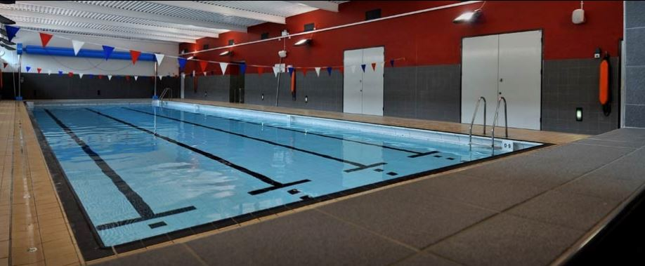

Our Story
Saddleworth Amateur Swimming Club (SASC) is based at Uppermill
Swimming Pool is at the heart of our community. The club was
established more than 30 years ago with the aim of developing local
swimmers, getting more swimmers in the water, building and engendering
a life-long love of the sport.
The club is part of the elite athlete pathway where talented swimmers
are identified and encouraged to develop their swimming as far as
possible including; regional, national & international competition
standards. Over the years we have had a number of Olympic and
Commonwealth games athletes as members of the club; Jess Lloyd, who
swam in the 2012 London Olympics and Ben Procter who swam in the 2012
London Paralympics being just two recent examples.
The club competes in local gala leagues and runs a number of internal
competitions. Additionally we encourage our members to take part in
open galas, triathlons & other swimming events.
The club was recently awarded the Swim21 national standard by Swim
Mark demonstrating our commitment to being an effective, ethical &
sustainable club.
Our People
The best team in the world.
SASC is run by an able team of dedicated volunteers, whilst training
sessions are conducted by fully qualified professional coaches.
Galas
Forthcoming galas for 2023.
| Date |
Gala |
Location |
| 15 May 2023 |
Club Points Gala |
Saddleworth |
| 22 May 2023 |
SASC Team - Open League Gala |
Chadderton |
| 5 June 2023 |
Club Points Gala (Final one of season) |
Saddleworth |
| 25 June 2023 |
SASC Team - Wakes Gala |
Oldham |
| 14 July 2023 |
SASC Team - Open League Gala |
Oldham |
| 15 July 2023 |
SASC Team - Sprint Gala |
Bury |
Join Us
Training sessions are on Monday & Wednesday evenings.
We are currently accepting new swimmers from the age of 8 up to 16,
who can swim 25 metres in at least 3 strokes. If you child is a keen
swimmer, why not come down to a session and give us a try.
For more information and to arrange a trial email
sascadmin@gmail.com
Order Kit
| Item |
Price |
| Girls Costumes |
£25.00 |
| Boys Jammers |
£25.00 |
| Hoodies |
£25.00 |
| Polo Shirts |
£25.00 |
To order club kit, please print and complete the
order form
and email to -
sasckitorders@gmail.com
All orders MUST be paid for at time of order, please
pay using bank transfer to the following account:-
Payee: SASC
Sort Code: 01-09-99
Account Number: 30389267
Payment Reference: KIT-Firstname-Surname Initial
eg. KIT-EmmaC
When returning form please provide the amount and date paid.
Where to find us
For more information and to arrange a trial email
sascadmin@gmail.com